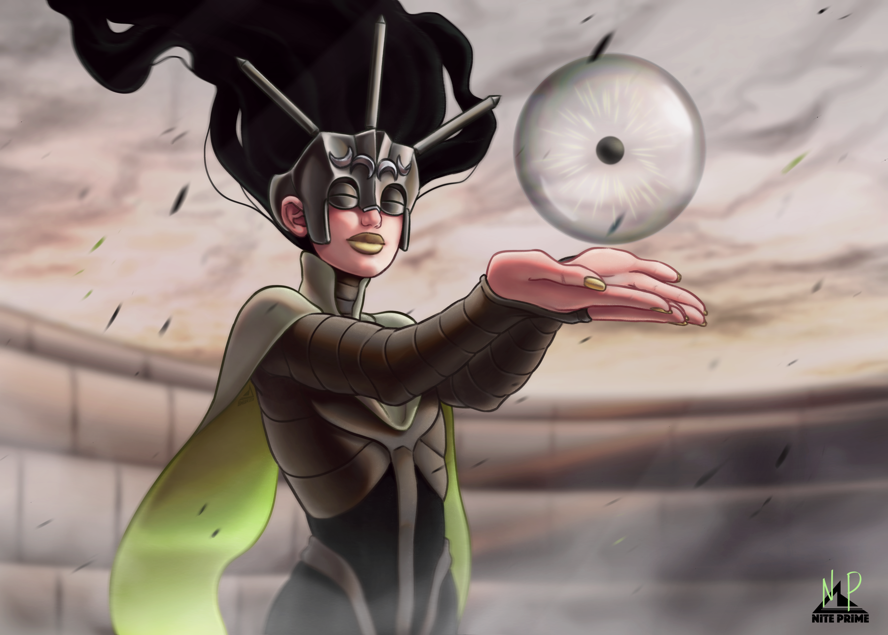
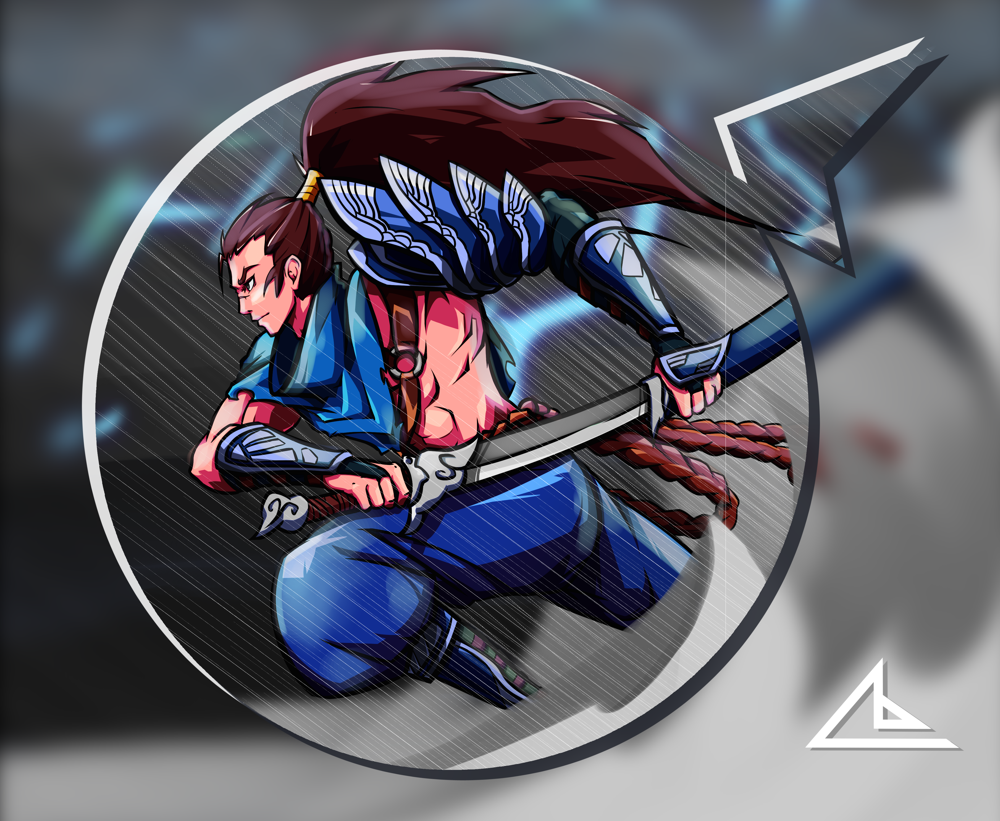

Digital Art
~ 2014 - Today
Nite Prime Creations

Long before I finished school, I began exploring my interest in digital art. When I bought my first Wacom tablet around 2014, I was immediately hooked on creating my own artwork. Since then, I have continued to develop my skills and created a wide range of digital art pieces.
Although I never focused much on building an audience or sharing my work on social media, as I was always more interested in the process of creating art itself, digital art became an important part of my development. It eventually helped me find my way to the University of Applied Sciences Ravensburg-Weingarten (RWU), where I studied for five years and discovered my interest in working at the intersection of design and technology.
...




My Development as an Artist
Since I started drawing with my Wacom tablet, Clip Studio Paint has been my main drawing program. Over the years, my approach and style have changed several times. I initially worked with clean vector lines, but eventually moved towards a sketchier and more expressive style. I also used to work with colour more often, but found the process of colouring to be one of the most time-consuming and challenging parts of creating an illustration. More recently, I have started to enjoy working in monochrome. By focusing on shapes, values, and line work instead of building up multiple layers of colour, I can finish more pieces while still enjoying the creative process.


I occasionally share my artwork on my Instagram account, @nite_prime. If you enjoy my work, I would be happy to see your support there.